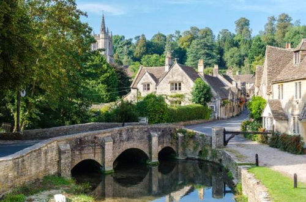
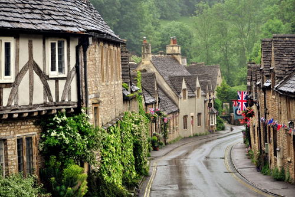
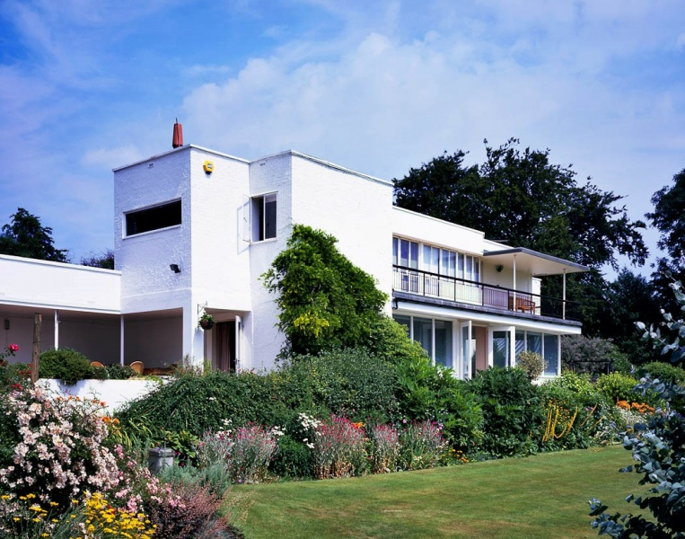
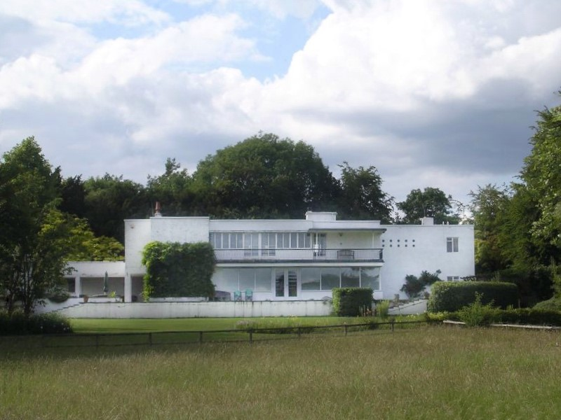
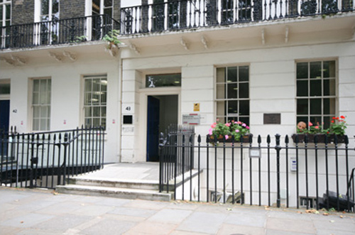
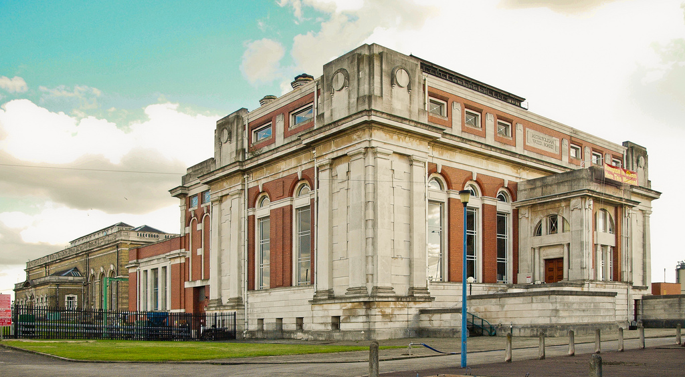
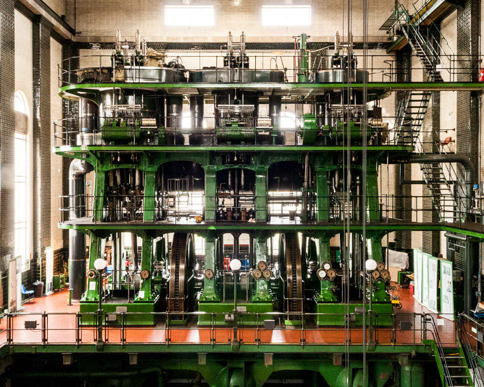

Castle Combe in Wiltshire is used as 'Kings Abbot' to which Poirot has moved following his "retirement".

View down the road in Castle Combe.

Kit's Close is a Grade II listed 'Moderne' Detached house in Fawley, Buckinghamshire. Designed and built in 1936/37, by Christopher Nicholson for Dr.Warren Crowe, it was used in this episode as 'Roger Ackroyd's House'.

Kit's Close - south elevation.

Gordon Square in London, WC1 where Poirot visits Ursula Bourne's sister regarding a reference.

Kempton Steam Museum, Hanworth in Middlesex was used as 'Ackroyd's Factory'.

Interior of Kempton Steam Museum.